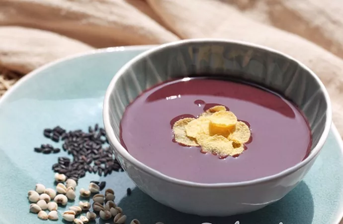

一天吃四顿都不胖的秘密！
为了早晨多睡一会，早饭不是便利店草草对付，就是干脆不吃。 殊不知早餐才是一天中最重要的一餐，给人体提供足够的能量，促进消化系统正常工作，更能提高上午的精神和工作效率。早餐得吃得讲究，要吃好，但需注意的是高脂肪高糖的食物会加重肠胃负担，引起不适。 巧巧推荐你一款好吃又健康的早餐——红豆薏米糊。提前一晚泡好红豆、薏米，放入破壁机中，起床后一键启动，加热的同时将食材高速搅打成糊，洗漱化妆的20分钟内就完成了一碗营养糊糊，祛湿消肿温和养胃。
或是配一杯爽口的排毒果蔬汁，破壁机的强大动力能瞬间击破食物细胞壁，释放果蔬营养，自然又健康，唤醒活力一整天。
再搭配两片全麦面包，自制早餐，低脂营养。再也不用望着排长队的早餐队伍内心焦灼。
担心五谷杂粮不易煮透？球釜电饭煲有专属糙米饭烹饪模式选择，大火力IH360°立体加热，让糙米饭粒粒饱满。如果不想做菜，还可以将喜欢的食材荤素搭配放入锅中，制作成焖饭也是一个不错的选择~
想保持下午工作的干劲、犒劳自己，又不想有太多长肉的顾虑？一壶花茶，几块茶点，即可满足解腻、解馋、提神各种需求。在办公室放上一个养生壶，身形小巧不占地方，还有多种炖煮功能，分离的茶漏能精细过滤茶渣，饮用更方便真的很完美~
胃和你一样晚间也需要休息，蠕动消化功能会减弱，因此晚餐不宜过多，不然会增加胃的负担，难以消化。 清淡一些的食物，比如蔬菜、养胃粥是晚餐的不错选择。此外，红薯、玉米这些粗粮也可以帮助胃的蠕动，促进消化。